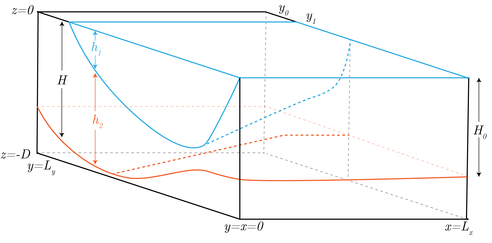

We assume a domain defined as:
\begin{equation}
x \in \left[0, L_x\right] \quad \text{ and } \quad y \in \left[0, L_y \right].
\end{equation}
This gives a domain that is similar to the one presented in Fig. 1.

Fig. 1: The domain of two layers (with a resting abyssal layer) considered in the Ventilated Thermocline model.
For simplicity later, we nondimensionalize as follows:
\begin{equation}
\widehat{x} = \frac{x}{L_x} \quad \text{ and } \quad \widehat{y} = \frac{y}{L_y}.
\end{equation}
We are further assume an Ekman pumping field of the form:
\begin{equation}
w_{Ek} = - \frac{\pi \tau_x}{\rho_0 f L_y}\sin\left[\frac{\pi y}{L_y}\right],
\end{equation}
where we can additionally define:
\begin{equation}
|w_{Ek}| = \frac{\pi \tau_x}{\rho_0 f L_y} \sim \text{max}\left[w_{Ek}\right] \simeq 1.05 \times 10^{-6} \: \left[\text{m}\: \text{s}^{-1}\right],
\end{equation}
from which we can introduce the nondimensionalized Eckman pumping field as:
\begin{equation}
\widehat{w_{Ek}} = \frac{w_{Ek}}{|w_{Ek}|}.
\end{equation}
We then know that the geostrophic streamfunction is defined as:
\begin{equation}
\Psi_{geo} = \frac{f}{\beta}\int_{\text{eastern boundary}}^x \text{d}x \: w_{Ek},
\end{equation}
where we are integrating from the eastern boundary, where we assume that $\Psi$ is 0.
We can preform this integral, assuming the eastern boundary is $L_x$, to get:
\begin{equation}
\Psi_{geo} = \frac{\pi \tau_x L_x}{\beta \rho_0 L_y}\left(1 - \frac{x}{L_x}\right)\sin\left[\frac{\pi y}{L_y}\right].
\end{equation}
For convenience in the future, we let:
\begin{equation}
\Psi_{Sv} = \frac{\pi \tau_x L_x}{\beta \rho_0 L_y} \sim \text{max}\left[\Psi_{geo}\right] \simeq 15.7 \: \left[\text{Sv}\right],
\end{equation}
following the notes, giving:
\begin{equation}
\Psi_{geo} = \Psi_{Sv}\left(1 - \frac{x}{L_x}\right)\sin\left[\frac{\pi y}{L_y}\right],
\end{equation}
and we correspondingly introduce the nondimensionalized streamfunction by as:
\begin{equation}
\widehat{\Psi_{geo}} = \frac{\Psi_{geo}}{\Psi_{Sv}}.
\end{equation}
Now, we take the following values, which we will use for the remainder of the problem set:
\begin{align}
\tau_x &\sim 1 \times 10^{-1} \: \left[\text{kg} \text{ m}^{-1} \text{s}^{-2}\right], \\
L_y &\sim 3 \times 10^{6} \: \left[\text{m}\right], \\
L_x &\sim 3 \times 10^{6} \: \left[\text{m}\right], \\
\beta &\sim 2 \times 10^{-11} \: \left[\text{s}^{-1} \text{m}^{-1}\right], \\
\rho_0 &\sim 1 \times 10^{3} \: \left[\text{kg} \text{ m}^{-3}\right], \\
f_0 &\sim 1 \times 10^{-4} \: \left[\text{s}^{-1}\right], \\
g' &\sim 2 \times 10^{-2} \: \left[\text{m} \text{ s}^{-2}\right] .
\end{align}
With all of this, we have thus determined the (nondimensionalized) forcing function, $\widehat{w_{Ek}}$, and the corresponding (nondimensionalized) geostrophic streamfunction for a single, homogeneous layer, $\widehat{\Psi_{geo}}$.
These are plotted in Fig. 2.
Fig. 2: The appropriately nondimensionalized wind-driven forcing function, $\widehat{w_{Ek}}$, and the corresponding geostrophic streamfuncion, $\widehat{\Psi_{geo}}$.
North of $y_1$
We then know that all of the transport is carried in Layer 2, as $h_1$ is by assumption 0 north of $y_1$ and the abyssal layer is at rest.
Now, we start by assuming Sverdrup Balance in Layer 2, giving:
\begin{equation}
\beta v_2 = f \partial_z w_{Ek}.
\end{equation}
Proper integration by Separation of Variables gives:
\begin{equation}
\beta v_2 \int_{z=-h_2}^{z=0} \text{d}z = f \int_{w_{Ek}=0}^{w_{Ek}=w_{Ek}} \text{d}w_{Ek},
\end{equation}
leading to:
\begin{equation}
\beta v_2 h_2 = f w_{Ek}.
\end{equation}
Now, we integrate over the entire $x$ domain in order to calculate the meridional volume transport that must take place by mass conservation:
\begin{equation}
v_2h_2\int_{L}^x \text{d}x = \frac{f}{\beta}\int_{L}^x \text{d}x \: w_{Ek} = \Psi_{geo},
\end{equation}
where we have defined $\Psi_{geo}$ as the geostrophic component of the Sverdrup steamfunction, as calculated above.
Next, we